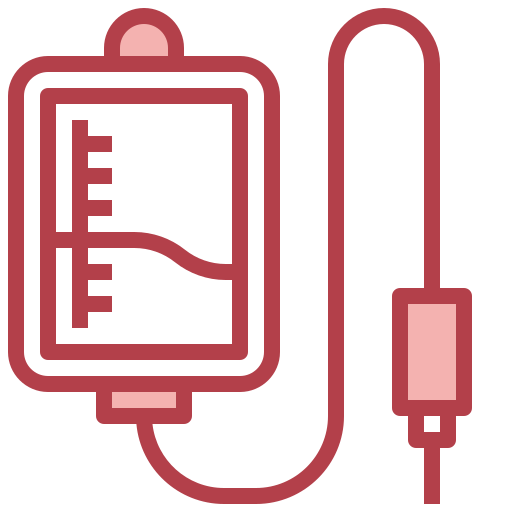
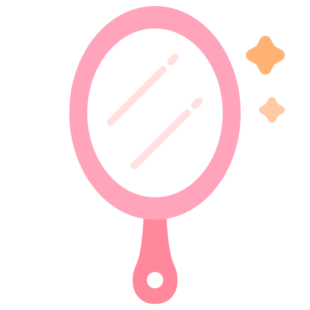
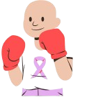

Uma experiência real transformada em acolhimento e informação
Importante!
Esta cartilha não substitui, em nenhuma hipótese, a orientação médica. Tudo o que está aqui é baseado em experiências pessoais e cada pessoa pode reagir de forma diferente ao tratamento. Sempre siga as orientações da sua equipe de saúde e, em caso de dúvidas ou sintomas, procure um profissional.
Sobre esta cartilha
Essa cartilha não nasceu de um livro, nem de um protocolo médico. Ela nasceu da experiência real de quem está passando pelo tratamento. Em meio a consultas, exames, dias bons e dias difíceis, surgiu uma vontade sincera de transformar tudo isso em algo que pudesse ajudar outras pessoas — nem que seja um pouco.
Porque, na prática, a gente percebe que existem muitas informações técnicas… mas pouco se fala sobre como as coisas realmente são no dia a dia. E, muitas vezes, quando precisamos de respostas, acabamos tendo que procurar muito. Pesquisar, perguntar, juntar informações de vários lugares… quase como se estivéssemos “escavando” para entender melhor o que estamos vivendo. E isso tudo acaba tornando algo que já é pesado por si só, ainda mais cansativo.
Essa cartilha também nasce disso. Da vontade de facilitar esse caminho para outras pessoas. De reunir, de forma simples e real, coisas que poderiam ter sido mais acessíveis desde o começo.
Aqui, você não vai encontrar regras, nem verdades absolutas — afinal, não existe uma receita de bolo para passar por um tratamento oncológico. Mas aqui, você vai encontrar vivências, percepções e dicas que surgem da rotina de quem está vivendo o tratamento de dentro para fora.
A ideia é simples: te ajudar a se sentir menos perdido(a) no meio de tudo isso.
Se em algum momento você se reconhecer em alguma parte, ou sentir que alguma coisa aqui te ajudou, mesmo que um pouquinho, então ela já cumpriu seu papel.
Quimioterapia na prática
Antes de começar o tratamento, é comum imaginar a quimioterapia como algo muito mais assustador do que, de fato, ela é na prática. Isso não significa que seja fácil, mas entender como realmente funciona ajuda a diminuir um pouco da ansiedade do desconhecido.
No dia da quimio, geralmente você chega, faz os procedimentos iniciais (como triagem e checagem de sinais vitais) e depois começa a medicação. Dependendo do protocolo, pode levar algumas horas. É um tempo em que você fica ali, recebendo a medicação, muitas vezes sentado(a) ou deitado(a). No início, pode dar medo, mas, com o tempo, aquilo vai se tornando parte da rotina.
Uma coisa importante: nem sempre você vai sentir algo na hora da infusão. Muita gente espera uma reação imediata, mas, na maioria dos casos, os efeitos aparecem depois — geralmente nos dias seguintes.
Algumas coisas que costumam ajudar no dia da quimio:
Levar algo para se distrair (celular, fone, série, música, etc.);
Usar roupas confortáveis;
Ter algo leve para comer (se permitido);
Manter alguém de confiança por perto (se permitido)

Com o tempo, você vai entendendo como seu corpo reage e criando sua própria forma de passar por esse momento. Não existe uma forma “certa” de viver a quimioterapia. Existe a sua forma — e ela vai se ajustando ao longo do caminho.
O emocional durante o tratamento
Uma das coisas que menos explicam no início é o quanto o emocional também faz parte do tratamento. Não é só o corpo que muda. A cabeça muda, os pensamentos mudam e a forma de sentir as coisas também.
Tem dias em que você pode acordar bem, leve e feliz. E, no mesmo dia, algumas horas depois, se sentir triste, irritado(a) ou sem energia pra nada. Isso não é fraqueza. É uma resposta real a tudo o que está acontecendo.
O tratamento mexe com o corpo, com a rotina, com a autoestima e com a sensação de controle sobre a própria vida. É natural que o emocional acompanhe tudo isso.
Também é comum surgir:
Medo do que ainda vem pela frente;
Ansiedade antes das sessões;
Pensamentos difíceis, as vezes até sem motivo claro;
Sensação de estar "sozinho(a)", mesmo tendo pessoas por perto
E tem uma coisa importante: nem todo mundo ao redor vai saber lidar ou entender exatamente o que você está sentindo — e isso pode frustrar. Com o tempo, você vai aprendendo algumas formas de atravessar esses momentos: respeitar os dias difíceis, não se cobrar estar bem o tempo todo e aproveitar os momentos em que se sente melhor.
Se em algum momento ficar pesado demais, buscar ajuda profissional (como terapia) pode fazer muita diferença. Afinal, você não precisa dar conta de tudo sozinho(a).
Autoestima
Uma das partes que mais mexe com a gente, antes mesmo de começar o tratamento, é a expectativa sobre as mudanças no corpo. E, entre elas, o cabelo costuma ter um peso muito grande.
A possibilidade de queda, a dúvida se vai acontecer, quando vai acontecer, como vai ser… tudo isso gera ansiedade — às vezes até mais do que a própria quimioterapia.
Aqui vai uma coisa importante: não existe uma forma certa de lidar com isso. Tem quem prefira se preparar antes: pesquisar sobre laços, escolher lenços, testar formas diferentes de se ver no espelho, pensar em estratégias pra se sentir bem mesmo com as mudanças (e isso não é vaidade excessiva, é cuidado com a própria autoestima).
Por outro lado, também tem quem prefira não antecipar nada. Esperar acontecer e lidar com cada etapa no seu tempo. E tudo bem também.
Sobre opções que podem ajudar:
Lenços e turbantes;
Laces ou perucas;
Bonés ou acessórios;
Máquiagem - se fizer sentido para você
Até mesmo pequenos rituais que te façam se sentir mais "você"

Mas também é importante dizer: se, pra você, nada disso for necessário… tudo bem. Assumir o processo como ele é, inclusive a queda de cabelo, também é uma forma de força. Não é sobre esconder.
É sobre escolher o que te faz sentir melhor. Nenhuma das formas é mais certa ou mais forte do que a outra. A força não está na aparência. Está na forma como você atravessa tudo isso: do seu jeito.
Pequenas coisas que fazem a diferença
No meio de tudo isso, você vai perceber que não são só as grandes decisões que ajudam a atravessar o tratamento. As pequenas coisas do dia a dia também têm um peso — aquelas que ninguém te orienta, mas que, na prática, fazem muita diferença.
Algumas delas você só descobre vivendo. Outras podem ser compartilhadas.
Aqui vão algumas que costumam ajudar:
Ter sempre algo fácil de comer por perto e beber líquidos en pequenos goles por dia;
Deixar um "cantinho do conforto" preparado: uma manta, travesseiro, pijama, por exemplo;
Respeitras os sinais do corpo: se sentir cansaço, descanse! Seu corpo está trabalhando por você;
Ter algo que distraia a mente: séries, filmes, música, livros, jogos... qualquer coisa que ajude a "respirar" fora do tratamento;
Evitar comparações: cada pessoa vive isso de um jeito. Na dúvida, fale com seu(sua) médico(a);
Se tratar com gentileza: nem todos os dias será produtivos, nem todos serão bons - e tudo bem. Você não precisa dar conta de tudo agora.
Com o tempo, você vai criando suas próprias estratégias, entendendo o que funciona melhor pra você… e isso vai te dando um pouco mais de segurança no meio do processo.
Mente, corpo e alma: Cuidado completo
Durante o tratamento, é comum que toda a atenção fique voltada para o corpo. Os exames, os remédios, os sintomas… tudo gira em torno do físico. Mas, com o tempo, fica claro que existe um outro “tripé” que sustenta esse processo: mente, corpo e algo a mais — que cada pessoa pode chamar de um jeito.
Para alguns, é a fé. Para outros, espiritualidade. Para outros, conexão consigo mesmos, com a vida, com o que faz sentido.
Independentemente do nome, existe uma dimensão interna que também precisa de cuidado. Porque o corpo sente, mas a mente interpreta. E aquilo que você acredita, ou se apega, pode influenciar muito na forma como você atravessa tudo isso.
Cuidar do seu “algo a mais” pode ser:
Ter uma crença;
Fazer uma oração;
Meditar;
Se conectar com a natureza;
Ou simplesmente encontrar momentos de silêncio e presença;
Não existe uma forma certa. E também é importante dizer: nem todo mundo se conecta com espiritualidade — e tudo bem. Mas muitas pessoas encontram força em acreditar em algo maior, ou em algo que traga sentido para o que estão vivendo. Não como uma obrigação, mas como um apoio.
No meio de tantas incertezas, ter algo que sustente por dentro pode fazer diferença. E, aos poucos, você vai descobrindo o que te fortalece. Cuidar de si, nesse momento, vai além do físico.
É um cuidado completo, no seu tempo e do seu jeito.
Organização: Facilitando o dia a dia do tratamento
Durante o tratamento, uma coisa que pode ajudar muito — e que às vezes a gente só percebe depois — é a organização. São muitos exames, consultas, horários, documentos… e, no meio do cansaço e das emoções, é muito fácil se perder.
Criar pequenas formas de organização pode trazer mais sensação de controle e até diminuir a ansiedade.
Aqui vão algumas que fazem muita diferença na prática:
Ter uma pasta para exames e documentos:
Organizar uma agenda (física ou no celular):
Ter uma caixinha ou maleta de remédios:
Pode parecer simples, mas essas pequenas organizações ajudam a tirar um peso da cabeça. Em um momento em que tanta coisa foge do controle, ter o mínimo organizado já traz um pouco mais de tranquilidade.
Se prepare para ouvir de tudo (aprenda a filtrar)
Durante o tratamento, uma coisa é quase certa: você vai ouvir de tudo. Desde palavras de carinho e apoio… até comentários sem noção, opiniões que você não pediu e comparações desnecessárias. E nem sempre isso vem de pessoas mal-intencionadas. Muitas vezes, vem de falta de conhecimento, tentativa de ajudar, nervosismo ou simplesmente falta de filtro mesmo. E tudo isso pode cansar.
Aprender a filtrar o que você ouve faz diferença. Nem toda opinião precisa ser absorvida. Nem todo comentário merece resposta. E nem tudo precisa te afetar.
Mas também é importante dizer: você não precisa engolir tudo calado(a). Se algo te incomodar, você pode — e tem direito de — se posicionar.
E aqui entra um ponto prático que pode ajudar muito: pensar antes em possíveis respostas (sei que parece estranho, mas pode ajudar). Você pode ter algumas “respostas prontas”, como:
"Prefiro não falar sobre isso agora";
"Cada caso é um caso, estou seguindo orientações médicas";
"Entendo sua intenção, mas isso não me ajuda nesse momento";

E, se precisar ser mais direto(a), tudo bem também. Se impor não é grosseria — é autocuidado. Com o tempo, você também vai aprendendo a diferenciar: quem fala por carinho, mesmo sem jeito… e quem ultrapassa limites. E isso ajuda a escolher quando relevar e quando se posicionar.
No fim, o mais importante é lembrar: o processo é seu. Você não precisa carregar as opiniões dos outros junto com tudo o que já está vivendo.
Direitos do paciente oncológico
Durante o tratamento, é comum focar tanto na saúde que outras informações importantes acabam ficando em segundo plano. Mas existem direitos que podem ajudar — e muito — nesse processo. O problema é que pouca gente fala sobre isso de forma clara.
Alguns dos direitos mais conhecidos (e úteis) são:
Atendimento prioritário em filas, atendimentos e alguns serviços;
Afastamento pelo INSS (dependendo do caso);
Saque do FGTS e, em alguns casos, do PIS/PASEP;
Isenção de alguns impostos (determinadas situações);
Possibilidade de enquadramento como PCD (Pessoa com Deficiência);
Transportes e outros apoios locais, em determinados locais;
Mas aqui vai um ponto muito importante: nem todos os direitos são automáticos. Muitos exigem solicitação formal, laudos médicos e documentos específicos. Além disso, podem variar de acordo com o tipo de câncer, estágio da doença, impacto funcional e situação individual.
Por isso, se informar faz toda a diferença. Buscar orientação pode te ajudar a acessar direitos que você nem sabia que tinha.
Quem sou eu
Essa cartilha nasceu de uma necessidade real. De momentos em que surgiram dúvidas e não havia respostas claras. De situações em que foi preciso procurar muito, perguntar, pesquisar, insistir… e, mesmo assim, nem sempre encontrar o que realmente ajudava na prática.
Em muitos momentos, a sensação foi de ter que “escavar” informações — juntar pedaços aqui e ali, testar, entender sozinha.
E foi justamente daí que surgiu a vontade de transformar essa experiência em algo útil para outras pessoas. A ideia nunca foi trazer um conteúdo perfeito, mas sim algo real. Algo que encurte caminhos, que evite que outras pessoas precisem passar pelo mesmo nível de incerteza e que, de alguma forma, ofereça um pouco mais de clareza no meio de tudo isso.
Se essa cartilha conseguiu te ajudar, te orientar ou até só te fazer sentir um pouco mais acompanhado(a), então ela já cumpriu seu propósito.
Cada pessoa vai viver esse processo de um jeito único. Mas informação, acolhimento e troca podem tornar esse caminho um pouco menos difícil.
Com carinho,
De paciente para paciente. ❤️
 @analuizzasl
@analuizzasl